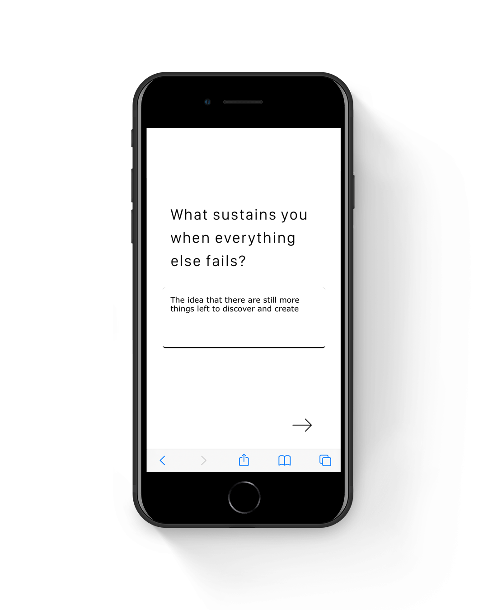
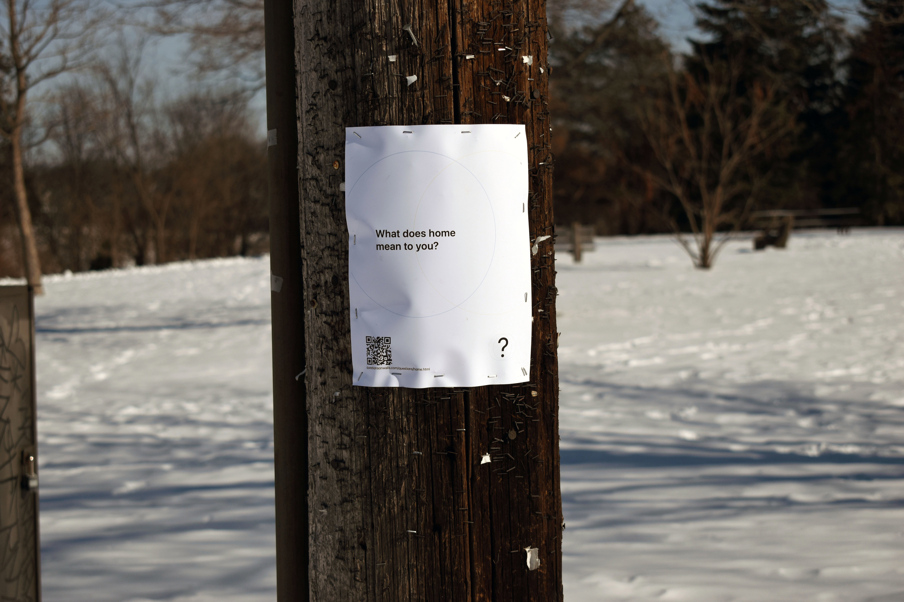
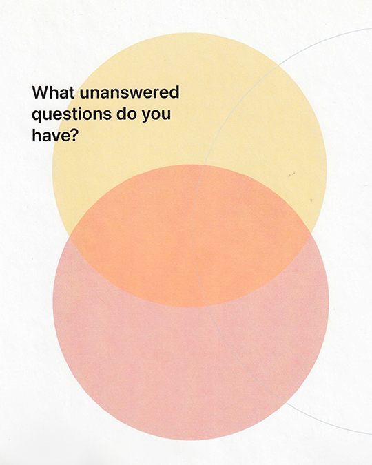
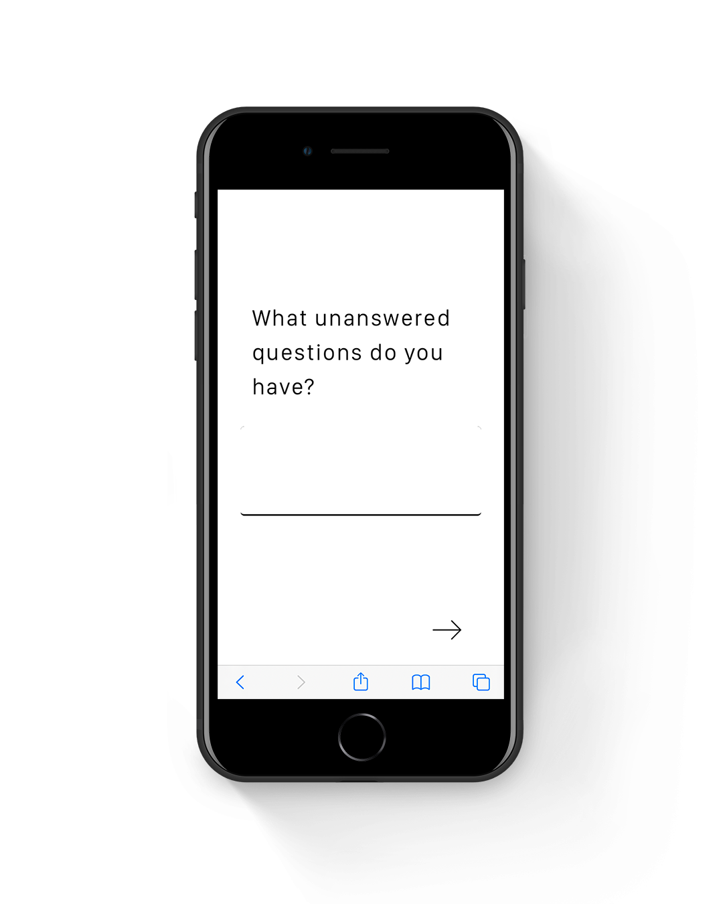
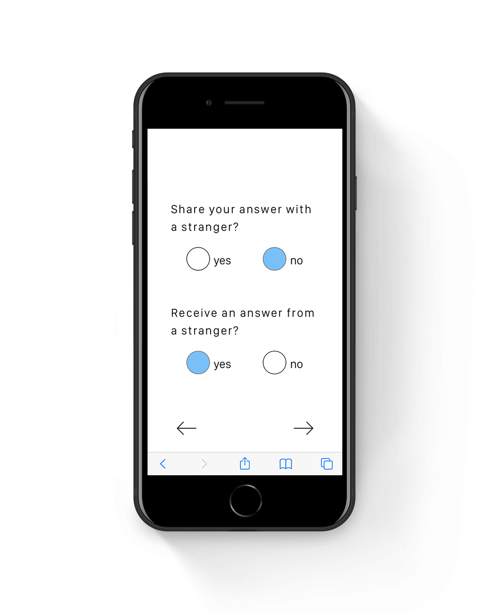
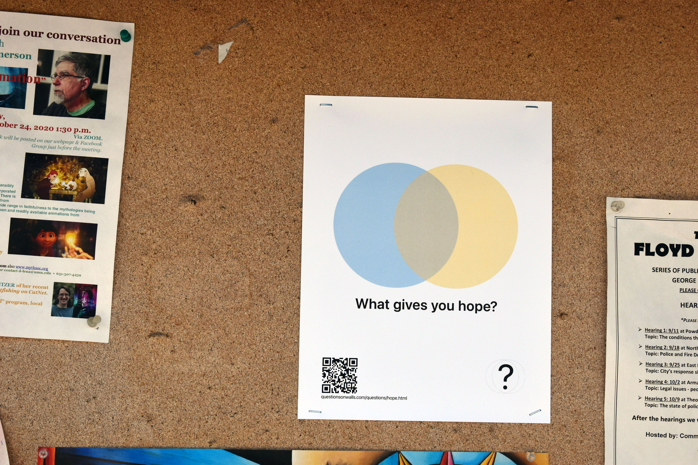
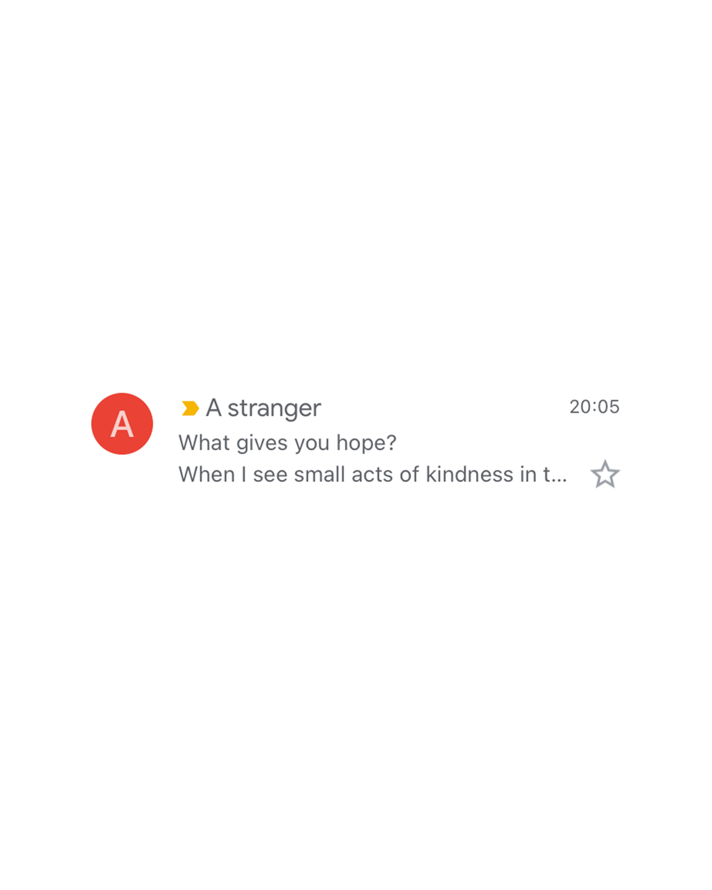

Questions on Walls
UX Design / Graphic Design / Web Development
Questions on Walls is an experience developed to connect communities across space and time, despite the present need to distance. Questions are found, physically—posted throughout the city on community boards, buildings, and telephone poles—and can be interacted with virtually—via the Questions on Walls interface. As you answer questions, you have the opportunity to share your thoughts and receive those of a stranger. It's a chance to celebrate both our similarities and differences, listen to others, and to empathize over the collective confusion that is existing, here and now.
You can interact with this piece here
You can interact with this piece here



We pass by each other everyday, yet it takes an intentional moment to connect, to learn about each other deeply. COVID-19 made it harder to stumble on these moments of intimate curiosity with strangers. I wanted to continue learning more about the people around me, while keeping all of us safe. I developed this experience as a means of connecting to others across space and time.


Questions are posted throughout the city of South Minneapolis, with a QR code and a link that connects the participant to the corresponding question on the interface. The participant then has the option to answer the question, to share their answer, and to receive an answer from a stranger via email. When we meet strangers, we often catch ourselves proceeding with caution, sometimes the experience feels mysterious, even magical. The experience is designed with these sentiments in mind—at the beginning of the experience, the participant is met with little to no information to explain its purpose or direction.
If the participant opts to receive an answer via email, they will also receive GPS coordinates to another posted question, to continue their journey. COVID-19 has demonstrated on a large scale how malleable space is. Amidst the virtual experience, the GPS coordinates function to tie participants to a physical space, that they, and others around them inhabit.
This project was developed using HTML, CSS, and PHP to provide an instantaneous and automatic email response.
This project was developed using HTML, CSS, and PHP to provide an instantaneous and automatic email response.

The design system utilizes SF Pro, the font used by Apple. This was in part to create a sense of familiarity, as Apple has become a dominant force in virtual experiences. The tracking, however, is increased to indicate that this experience is distinctly different from that of iPhones. When we pass by people everyday, we risk developing the belief that they are all the same. It takes slowing down and noticing the differences in each of us, to fully appreciate and empathize with another.
Questions on Walls is part of Artists Respond: Combating Social Isolation, a project of Springboard for the Arts.
Questions on Walls is part of Artists Respond: Combating Social Isolation, a project of Springboard for the Arts.
